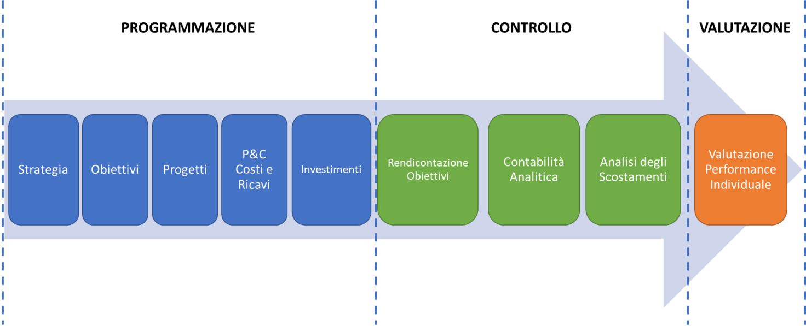

Man Tecnico:Macro-analisi requisiti
Realtà di riferimento
L’Agenzia di Tutela della Salute (ATS) della Città Metropolitana di Milano è nata il 1° gennaio 2016 come determinato dalla Legge Regionale n. 23/2015 - Evoluzione del Sistema Socio sanitario Lombardo.
L’ATS della Città Metropolitana di Milano comprende 195 comuni e raccoglie i territori che, fino al 31 dicembre 2015, erano di competenza di quattro Aziende distinte: ASL Milano, ASL Milano 1, ASL Milano 2, ASL Lodi.
La Legge Regionale attribuisce all’ATS funzioni di:
- negoziazione e acquisto delle prestazioni sanitarie e sociosanitarie dalle strutture accreditate;
- governo del percorso di presa in carico della persona in tutta la rete dei servizi sanitari, sociosanitari e sociali;
- governo dell’assistenza primaria e del convenzionamento delle cure primarie;
- governo e promozione dei programmi di educazione alla salute, prevenzione, assistenza, cura e riabilitazione;
- promozione della sicurezza alimentare, medica e medica veterinaria;
- sanità pubblica veterinaria;
- prevenzione e controllo della salute negli ambienti di vita e di lavoro;
- attuazione degli indirizzi regionali e monitoraggio della spesa in materia di farmaceutica, dietetica e protesica;
- vigilanza e controllo sulle strutture e sulle unità d’offerta sanitarie, socio sanitarie e sociali.
Processo di Programmazione e controllo: budget (BDG)
Il processo di budget è lo strumento con il quale, annualmente, sono trasformati piani e programmi aziendali in specifici obiettivi, definiti in base alle responsabilità organizzative interne dell’Agenzia.
Attraverso il processo di BDG la Direzione Strategica assegna ai Centri di Responsabilità (CdR) gli obiettivi operativi e le correlate risorse, periodicamente rileva il grado di raggiungimento degli obiettivi e il livello di efficacie ed efficienza dell’utilizzo delle risorse.
Gli obiettivi definiti nel processo di budget vengono redatti considerando sia la strategica dell’ATS della Città Metropolitana di Milano, che le regole di sistema prodotte da Regione Lombardia: gli obiettivi quindi rappresentano i parametri su cui esprimere la valutazione delle performance organizzative e individuali.
Nel dettaglio la piattaforma di programmazione dispone di una serie di moduli gestionali, di seguito descritti, che compongono il processo di programmazione:
- Definizione della strategia da parte della Direzione Generale e dei Centri di Responsabilità (CdR) che effettuano programmazione strategica. Esempio i Dipartimenti sono chiamati a definire la propria strategia dipartimentale. La strategia della Direzione strategica rappresenta il riferimento per le decisioni di BDG.
- “Traduzione” della strategia in obiettivi aziendali, ove ogni obiettivo viene assegnato ad uno o più CdR. Gli obiettivi vengono assegnati ai CdR e al personale assegnato al CdR che partecipa al conseguimento dell’obiettivo.;
- Il processo di programmazione (Bdg) prevede la possibilità di sviluppare progetti specifici. I progetti si differenziano dagli obiettivi in quanto per rilevanza attuativa, complessità e criticità richiedono, da parte della committenza, una progettazione dettagliata (azioni, risorse, tempi responsabilità, integrazione con altri CDR ecc) che viene proposta e guidata dal modulo progetti all’interno della scheda di BDG.
- Gli obiettivi economici sono gestisti dal modulo “programmazione costi e ricavi”, ogni conto è assegnato ad un CDR responsabile che attraverso il processo di programmazione viene responsabilizzato sulla gestione delle risorse in integrazione / collaborazione con il CdR di gestione delle risorse finanziarie anche per la predisposizione dei CET .
- Definizione e gestione del piano annuale/pluriennale degli investimenti.
- Produzione, diffusione e consultazione a tutti coloro che hanno accesso alla piattaforma di programmazione del report di contabilità analitica articolato per ATS /dipartimenti Cdr e Cdc , che consente di rilevare per fattore produttivo i costi ed i ricavi sostenuti e l’erosione rispetto al valore di Bdg assegnato.
- Modulo denominato Riesame della direzione del processo qualità ATS che consente. di valutare l’adeguatezza, l’efficacia del Sistema di Gestione per la Qualità (SGQ) e di poter intraprendere opportune e adeguate azioni di miglioramento.
- Il processo di programmazione nella sua periodicità annuale si conclude con la valutazione della performance organizzativa del Cdr e della performance individuale del personale.
Caratteristiche principali della piattaforma di programmazione e controllo
La Piattaforma di Programmazione e Controllo
La Piattaforma di Programmazione e Controllo, interamente informatizzata e resa disponibile via web mediante accessi profilati a tutti gli utenti che a vario titolo partecipano al processo di programmazione, rappresenta lo strumento tecnico di comunicazione a disposizione della Direzione Strategica e del personale per la gestione del processo di programmazione e controllo. La predisposizione delle proposte di programmazione da parte dei Centri di Responsabilità (CdR) segue un percorso logico guidato dalla struttura della scheda di programmazione che, come rappresentato in figura, è suddiviso in: Programmazione, Controllo e Valutazione.

A seguito della nascita dell’ATS della Città Metropolitana di Milano, data 1° gennaio 2016, è stato necessario creare un modello unico per la realizzazione del processo di budget: ciascuna ATS, infatti, disponeva del proprio processo di budget.
È stato quindi necessario creare un sistema unico, reattivo e dinamico rispetto ai cambiamenti in quanto il processo di budget è definito da una Azienda nuova in cui la maturità organizzativa è in continua evoluzione.
Le caratteristiche principali dello strumento sono: Gestione complessiva dell’azienda proponendo un percorso intuitivo comprensibile adeguato alla cultura aziendale e di semplice gestione da parte degli utilizzatori;
- Automatizzazione del processo di budget, mantenendo comunque una predominanza della componente umana che governa il processo;
- Mantenere i collegamenti logici tra i Centri di Responsabilità (CdR): il CdR si rapporta con il proprio CdR padre ed il/i suo/i suoi CdR figli/o per garantire una diffusa responsabilizzazione rispetto agli obiettivi assegnati e una visione sia complessiva sia dettagliata dell’ATS (dimensione organizzativa);
- Elevata scalabilità e manutenibilità dello strumento: funzionalità storicizzate per ogni anno di budget mantenendo una prospettiva di continua evoluzione negli anni di budget successivi, con sviluppi rapidi e puntuali;
- Portabilità della soluzione applicabile anche ad altri contesti aziendali in ambito sanitario e del no-profit;
- Configurazione dettagliata disponibile, ma non strettamente necessaria. Ciò evita di rendere l’applicativo molto oneroso in fase di configurazione, ad esempio di un nuovo anno di budget o di un nuovo periodo di rendicontazione;
- Sistemi di login allo strumento: si è scelto il login tramite sistemi Azure ed LDAP per evitare una eccessiva configurazione di permessi ed inserimento di informazioni anagrafiche sull’utente. L’utente viene “abilitato all’accesso” e, una volta effettuato il login, vengono recuperate le sue informazioni anagrafiche dal sistema LDAP.